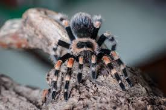
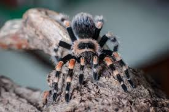

Крупные мохнатые пауки. Несмотря на название, птицы не являются их основной пищей, хотя более крупные особи могут охотиться на мелких птиц, ящериц и лягушек. Взрослые птицееды отличаются крупными размерами, некоторые виды могут достигать 27 см в размахе лап. Паутину используют для защиты и построек.